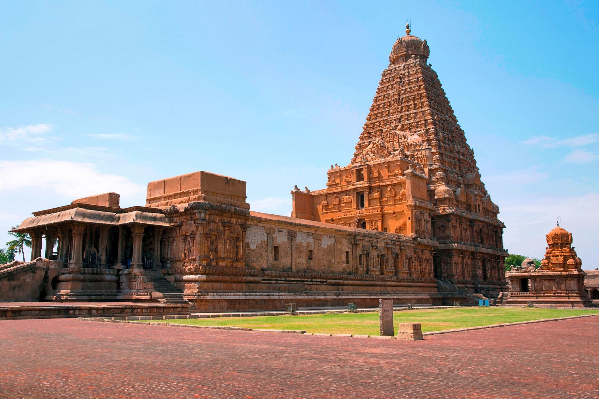
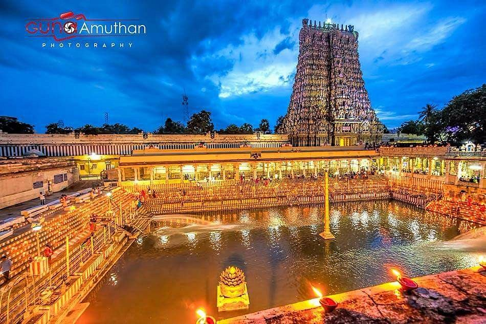

Architectural Heritage
The architecture of Tamil Nadu is a testament to its rich cultural and historical legacy. Explore some of the most iconic architectural marvels of the region.

Brihadeeswarar Temple:
The Brihadeeswarar Temple, also known as the Big Temple, is renowned for its grand architecture and intricate carvings, and is a UNESCO World Heritage Site.
